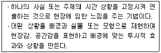
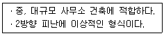
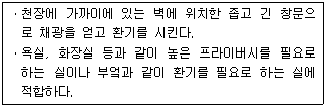
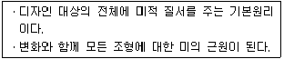
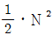
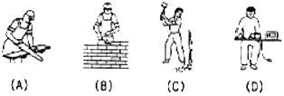
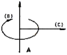

실내건축산업기사 (2011-08-21 기출문제)
1과목: 실내디자인론
1. 소파(sofa)에 관한 설명으로 옳지 않은 것은?
- 소파가 침대를 겸용할 수 있는 것을 소파베드라 한다.
- 세티는 동일한 두개의 의자를 나란히 합해 2인이 앉을수있도록 한 것이다.
- 라운지 소파는 편히 누울 수 있도록 쿠션이 좋으며 머리와 어깨부분을 받칠 수 있도록 한쪽 부분이 경사져 있다.
- 체스터필드는 고대 로마시대 음식물을 먹거나 잠을 자기위해 사용했던 긴 의자로 좌판의 한쪽 끝이 올라간 형태이다.
(정답률: 78%)

2. 동선에 관한 설명으로 옳지 않은 것은?
- 동선 사용의 빈도가 큰 공간은 주동선을 중심으로 배치한다.
- 동선은 사람이나 물건이 이동하면서 만든 궤적으로서 일상생활의 움직임을 표시하는 선이다.
- 동선은 밀도, 크기, 길이의 3요소를 가지며 이들 요소의 정도에 따라 거리의 장단, 폭의 대소가 결정되어진다.
- 동선계획의 기본은 동선의 시작에서 목적하는 지점에 이르는 끝까지 원활하고 자연스러운 흐름이 되도록 하는 것이다.
(정답률: 87%)
3. 다음 설명에 알맞은 특수전시기법은?

- 디오라마전시
- 파노라마전시
- 아일랜드전시
- 하모니카전시
(정답률: 74%)
4. 다음 중 전시목적 공간에 해당하지 않는 것은?
- 쑈룸
- 박물관
- 박람회
- 컨벤션 홀
(정답률: 78%)
5. 형태의 관한 설명으로 옳지 않은 것은?
- 디자인에 있어서 형태는 대부분이 자연형태이다.
- 추상적 형태는 구체적 형태를 생략 또는 과장의 과정을 거쳐 재구성된 형태이다.
- 자연형태는 단순한 부정형의 형태를 취하기도 하지만 경우에 따라서는 체계적인 기하학적인 특징을 갖는다.
- 순수형태는 인간의 지각, 즉 시각과 촉각 등으로는 직접 느낄 수 없고 개념적으로만 제시될 수 있는 형태이다.
(정답률: 60%)
6. 다음의 실내디자인의 제반 기본조건 중 가장 먼저 고려되어야 하는 것은?
- 정서적 조건
- 기능적 조건
- 심미적 조건
- 환경적 조건
(정답률: 83%)
7. 황금분할에 관한 설명으로 옳은 것은?
- 황금분할은 1 : 1.518이다.
- 황금분할은 비대칭 분할이라고도 한다.
- 중세 로마에서 시작된 기하학적 분할법이다.
- 황금분할은 건축물과 조각 등에 이용되어온 기하학적 분할 방식이다.
(정답률: 77%)
8. 다음 설명에 알맞은 사무소 건축의 코어형식은?

- 외코어형
- 중앙코어형
- 편심코어형
- 양단코어형
(정답률: 88%)
9. 치수계획에 있어 적정지수를 설정하는 방법으로 최소치+α, 최대치-α, 목표치±α가 있는데, 이때 α는 적정치수를 끌어내기 위한 어떤 치수인가?
- 기본치수
- 조정치수
- 유동치수
- 가능치수
(정답률: 70%)
10. 커튼(curtain)에 관한 설명으로 옳지 않은 것은?
- 드레퍼리 커튼은 일반적으로 투명하고 막과 같은 직물을 사용한다.
- 새시 커튼은 창문 전체를 커튼으로 처리하지 않고 반 정도만 친 형태이다.
- 글라스 커튼은 실내로 들어오는 빛을 부드럽게 하며 약간의 프라이버시를 제공한다.
- 드로우 커튼은 창문 위의 수평 가로대에 설치하는 커튼으로 글라스 커튼보다 무거운 재질의 직물로 처리한다.
(정답률: 66%)
11. 다음 설명에 알맞은 창의 종류는?

- 측창
- 고창
- 윈도우창
- 베이 윈도우
(정답률: 64%)
12. 광원을 넓은 면적의 벽면에 매입하여 비스타(vista)적인 효과를 낼 수 있으며 시선에 안락한 배경으로 작용하는 건축화 조명방식은?
- 광창 조명
- 광천장 조명
- 코니스 조명
- 캐노피 조명
(정답률: 79%)
13. 건축물의 노후화를 억제한거나 기능 향상을 위하여 대수선하거나 일부 증축하는 행위를 의미하는 것은?
- 리빌딩(rebuilding)
- 리모델링(remodeling)
- LCC(life cycle cost)
- 재개발(redevelopment)
(정답률: 85%)
14. 선에 관한 설명으로 옳지 않은 것은?
- 면에 한계, 면들의 교차에서 나타난다.
- 수직선은 심리적으로 상승감, 존엄성, 엄숙함 등의 느낌을 준다.
- 여러 개의 선을 이용하여 움직임, 속도감, 방향을 시각적으로 표현할 수 있다.
- 곡선은 약동감, 생동감 넘치는 에너지와 운동감, 속도감등의 남성적인 느낌을 준다.
(정답률: 84%)
15. 다음 설명에 알맞은 디자인 원리는?

- 리듬
- 통일
- 균형
- 대비
(정답률: 48%)
16. 주택의 평면계획시 공간의 조닝 방법으로 옳지 않은 것은?
- 실의 크기에 의한 조닝
- 가족 전체와 개인에 의한 조닝
- 정적 공간과 동적 공간에 의한 조닝
- 주간과 야간의 사용시간에 의한 조닝
(정답률: 55%)
17. 부엌에서 작업순서를 고려한 효율적인 작업대의 배치 순서로 알맞은 것은?
- 준비대→조리대→가열대→개수대→배선대
- 개수대→분비대→가열대→조리대→배선대
- 준비대→개수대→조리대→가열대→배선대
- 개수대→조리대→준비대→가열대→배선대
(정답률: 94%)
18. 모듈(module)계획에 관한 설명으로 옳지 않은 것은?
- 공사기간이 단축된다.
- 설계작업이 단순하고 용이하다.
- 계획의 유연성, 심미성, 다양성이 높다.
- 건축구성재의 대량생산이 가능하여 경제적이다.
(정답률: 67%)
19. 실내디자인 과정을 조사분석 단계와 디자인 단계로 나눈때, 다음 중 조사분석 단계에 속하지 않는 것은?
- 문제점 인식
- 정보의 수집
- 아이디어의 시각화
- 클라이언트의 요구사항 파악
(정답률: 85%)
20. 실내디자인의 요소 중 벽에 관한 설명으로 옳지 않은 것은?
- 높이 1800mm 정도의 벽은 두 공간을 상징적으로 분리, 구분한다.
- 바닥에 대한 직각적인 벽은 공간요소 중 가장 눈에 띄기 쉬운 요소이다.
- 실내 분위기를 형성하며 특히 색, 패턴, 질감, 조명 등에 의해 그 분위기가 조절된다.
- 공간을 에워싸는 수직적 요소로 수평방향을 차단하여 공간을 형성하는 기능을 갖는다.
(정답률: 76%)
2과목: 색채 및 인간공학
21. 다음 중 최적의 조건하에서 시각적 암호의 식별가능 수준수가 가장 큰 것은?
- 숫자
- 영문자
- 면색(面色)
- 색광(色光)
(정답률: 70%)
22. 다음 중 시력에 관한 설명으로 틀린 것은?
- 정상 시각에서는 원점은 시각이 600분일 때 최대이다.
- 가장 많이 사용하는 시력의 척도는 최소분간시력이다.
- 눈이 초점을 맞출 수 없는 가장 먼 거리를 원점이라 한다.
- 눈이 초점을 맞출 수 없는 가장 가까운 거리를 근점이라 한다.
(정답률: 60%)
23. 다음 중 일반적으로 실현가능성이 같은 N 개의 대안이 있을때 총정보량을 구하는 식으로 옳은 것은?
- 총정보량 = log2N
- 총정보량 = log102N
- 총정보량 = N/log10N
- 총정보량 =

(정답률: 59%)
24. 다음 중 인체치수 측정에 있어 손의 치수 및 모양에 대한 측정과 가장 관련이 깊은 것은?
- 구조적 측정
- 운동구조학적 측정
- 생리학적 측정
- 능력학적 측정
(정답률: 66%)
25. 다음 중 빛과 조명에 관한 설명으로 적절하지 않은 것은?
- 조명의 분포는 국소화된 조명보다 전체 조명을 사용하는 것이 바람직하다.
- 눈부심은 광원이 관찰자의 시선에서 45 각도 이내에 있을 때 발생한다.
- 시야에 들어오는 물체 간에 휘도 차이가 작을수록 눈부심이 많이 발생한다.
- “작업 : 주의” 최대 권장 휘도 차이는 “10 : 1”정도이다.
(정답률: 67%)
26. 서서 가벼운 부품에 대한 조립작업을 할 때 상완의 피로도를 최소화할 수 있는 작업대의 최적 높이는 팔꿈치 높이를 기준으로 얼마 정도가 가장 적절한가?
- 5 ~ 10cm 높게
- 15 ~ 20cm 높게
- 5 ~ 10cm 낮게
- 15 ~ 20cm 낮게
(정답률: 55%)
27. 1손(sone)은 몇dB의 1000Hz 순음의 크기를 말하는 가?
- 10
- 20
- 40
- 100
(정답률: 70%)
28. 다음 중 인간 공학적 의자설계를 위한 일반적인 고려사항과 가장 거리가 먼 것은?
- 좌면의 무게 부하 분포
- 좌면의 높이와 폭 및 깊이
- 앉는 키의 키기 및 의자의강도
- 동체(胴體)의 안정성과 위치 변동의 편리성
(정답률: 61%)
29. 다음 중 음을 완전하게 흡수하는 1평방피트(ft2)의 표면에 상당하는 음향흡수 단위는?
- phon
- cycle
- sabine
- dyne
(정답률: 38%)
30. 다음 중 그림에서 에너지소비가 큰 것에서부터 작은 순서대로 올바르게 나열된 것은?

- (C) ＞ (A) ＞ (B) ＞ (D)
- (C) ＞ (B) ＞ (A) ＞ (D)
- (B) ＞ (A) ＞ (C) ＞ (D)
- (B) ＞ (C) ＞ (A) ＞ (D)
(정답률: 85%)
31. 다음 관용색과 계통색에 관한 내용으로 틀린 것은?
- 고동색은 관용색 이름이다.
- 풀색은 계통색 이름이다.
- 관용색 이름은 옛날부터 전해 내려오는 습관상으로 사용하는 색이다
- “어두운 녹갈색” 은 계통색 이름의 표시 예이다.
(정답률: 60%)
32. 그림과 같은 색입체를 만드는 원리에서 수직축(A)에 해당되는 요소는?

- 색상
- 명도
- 순도
- 채도
(정답률: 70%)
33. 다음 색채가 지닌 연상 감정에서 광명, 희망, 활동, 쾌활등의 색은?
- 빨강(Red)
- 주황(Yellow Red)
- 노랑(Yellow)
- 자주(Red Purple)
(정답률: 83%)
34. 색채 동시대비 현상의 명도대비, 채도대비, 보색대비, 색상대비 중 유채색과 무채색을 나란히 배열하였을 때 관련 있는 것은?
- 명도대비 뿐이다.
- 명도대비, 채도대비가 있다.
- 명도대비, 채도대비, 색상대비가 있다.
- 명도대비, 채도대비, 보색대비, 색상대비가 있다.
(정답률: 60%)
35. 가시광선의 파장 범위는?
- 3500nm - 750nm
- 350nm - 700nm
- 380nm - 780nm
- 200nm - 480nm
(정답률: 80%)
36. 다음 중 유사색상 배색의 느낌이 아닌 것은?
- 화합적
- 평화적
- 안정적
- 자극적
(정답률: 90%)
37. 사람의 눈의 기관 중 망막에 대한 설명으로 옳은 것은?
- 색을 지각하게 하는 간상체, 명암을 지각하는 추상체가 있다.
- 시신경으로 RED, YELLOW, BLUE를 지각하는 세가지 세포가 있다.
- 시신경으로 통하는 수정체 부분에는 시세포가 없어 그곳에 상이 맺히면 색을 감지할 수 없다.
- 망막의 중심와 부분에는 주상체가 밀집하여 분포되어 있다.
(정답률: 54%)
38. 슈퍼그래픽의 기능 중 가장 거리가 먼 것은?
- 벽화적 기능
- 가구장식 기능
- 정보전달 기능
- 연출기능
(정답률: 68%)
39. 다음 중 주목성이 가장 높은 배색은?
- 자극적이고 대조적인 느낌의 배색
- 온화하고 부드러운 느낌의 배색
- 초록이나 자주색 계통의 배색
- 중성색이나 고명도의 배색
(정답률: 91%)
40. 다음 중 컴퓨터 입력장치가 아닌 것은?
- 스캐너
- 모니터
- 디지털카메라
- 디지타이저
(정답률: 63%)
3과목: 건축재료
41. 목재 자연 건조법의 주의 사항 중 옳지 않은 것은?
- 건조시간의 절약을 위해 가능한한 마구리를 노출한다.
- 목재 상호간의 간격을 충분히 하고 지면에서는 20cm 이상 높이의 굄목을 놓고 쌓는다.
- 건조를 균일하게 하기 위해 때때로 상하 좌우로 환적한다.
- 뒤틀림을 막기 위해 오림목을 고루 괴어둔다.
(정답률: 77%)
42. 다음 중 실(seal)재가 아닌 것은?
- 코킹재
- 퍼티
- 실링재
- 트래버틴
(정답률: 70%)
43. 종이 표면에 모양을 프린트하고 그 위에 투명 염화비닐 필름을 압착한 것으로 주로 수입벽지에서 많이 보이는 것은?
- 비닐 라미네이트 벽지
- 발포 염화비닐 벽지
- 코르크 벽지
- 염화비닐 칩 벽지
(정답률: 49%)
44. 화산석으로 된 진주석을 900 ~ 1200 ℃의 고열로 팽창시켜 만들며, 주로 단열, 보온, 흡음 등의 목적으로 사용되는 재료는?
- 트랜버틴(Tranvertine)
- 펄라이트(Pearlite)
- 테라조(Terrazzo)
- 석면(Asbestos)
(정답률: 70%)
45. 표면활성제의 일종으로 기포작용은 하지 않고 분산 및 습윤작용에 의해 시멘트 입자를 분산시켜 시멘트 페이스트의 유동성을 증가시킴으로써 콘크리트의 워커빌리티를 개선하여 단위수량을 감소시키는 혼화제는?
- 경화 촉진제
- 방수제
- 감수제
- 방청제
(정답률: 68%)
46. 각종 미장재료에 대한 설명으로 옳지 않은 것은?
- 석고플라스터는 가열하면 결정수를 방출하여 온도 상승을 억제하기 때문에 내화성이 있다.
- 바라이트 모르타르는 방사선 방호용으로 사용된다.
- 돌로마이트플라스터는 수축률이 크고 균열이 쉽게 발생 한다.
- 혼합석고플라스터는 약산성이며 석고라스 보드에 적합한다.
(정답률: 25%)
47. 철선은 일반적으로 어떤 성형법에 의하여 제작되는가?
- 단조
- 가공
- 압연
- 인발
(정답률: 37%)
48. 파티클 보드(particle board)에 대한 설명 중 옳지 않은 것은?
- 강도는 섬유의 방향에 따라 차이가 크다.
- 결질 파티클보드는 변형이 적다.
- 폐재, 부산물 등 저가치재를 이용하여 넓은 면적의 판상제품을 만들 수 있다.
- 경량 파티클보드는 흡음성, 열차단성이 경질 파티클보드보다 크다.
(정답률: 59%)
49. 타일형 바닥재 중 내마모성이 뛰어나고, 각종 형상을 자유자재로 재현할 수 있는 것은?
- 경질비닐타일
- 순염화비닐타일
- 아스팔트타일
- 적층비닐타일
(정답률: 36%)
50. 다음 금속 중 이온화 경향이 가장 큰 것은?
- Zn
- Cu
- Ni
- Fe
(정답률: 48%)
51. 연강철선을 가로. 세로로 대어 전기용접하여 정방형 또는 장방형으로 만들어 콘크리트 도로 바탕용 등에 처짐 및 균열에 대응하도록 만든 철물은?
- 와이어라스
- 메탈라스
- 와이어메시
- 코너비드
(정답률: 57%)
52. 철근콘크리트 구조용 골재로 해사를 사용할 경우, 우선조치 하여야 할 사항은?
- 해사를 충분히 건조시킨 후 사용한다.
- 물-시멘트비를 증가시킨다.
- 조골재를 많이 넣어 잔골재율을 낮춘다.
- 해사를 충분히 물에 씻어 사용한다.
(정답률: 65%)
53. 도배지를 붙이는 바탕을 조정하기 위하여 사용하는 바탕조정제 중, 석고나 탄산칼슘을 주원료로 하고, 바탕의 요철이나 줄눈, 균열이나 구멍 보수에 사용하는 것은?
- 수용성 실러(sealer)
- 용제형 실러(sealer)
- 퍼티(putty)
- 코킹(cocking)
(정답률: 76%)
54. 암석이 가장 쪼개지기 쉬운 면을 말하며 절리보다 불분명 하지만 방향이 대체로 일치되어 있는 것은?
- 석리
- 입상조직
- 석목
- 선상조직
(정답률: 43%)
55. 목재의 유용성 방부제로 사용되는 것은?
- 크레오소트유
- 콜타르
- 불화소다 2%용액
- P.C.P
(정답률: 62%)
56. 목재의 일반적 성질에 관한 설명 중 옳지 않은 것은?
- 일반적으로 강도는 전단강도를 제외하고 응력의 방향이 섬유방향과 직각인 경우 최소가 된다.
- 목재가 수분을 많이 함유하고 있는 상태가 건조한 상태보다 약하다.
- 널결재는 곹은결재보다 뒤틀림이 적다.
- 활엽수가 침엽수보다 일반적으로 비중이 크다.
(정답률: 58%)
57. 점토의 성질에 관한 설명 중 옳지 않은 것은?
- 알루미나가 많은 점토는 가소성이 좋다.
- 양질의 점토는 건조상태에서 현저한 가소성을 나타내며 가소성이 너무 작은 경우에는 모래 등을 첨가하여 조절 한다.
- 점토의 비중은 일반적으로 2.5~2.6의 범위이나 Al2O3가 많은 점토는 3.0에 이른다.
- 강도는 점토의 종류에 따라 광범위하며, 압축강도는 인장강도의 약 5배 정도이다.
(정답률: 47%)
58. 도장재료인 안료에 관한 설명 중 옳지 않은 것은?
- 안료는 유색의 불투명한 도막을 만듦과 동시에 도막의 기계적 성질을 보완한다.
- 무기안료는 내광성. 내열성이 크다.
- 유기안료는 레이크(lake)라고도 한다.
- 무기안료는 유기용제에 잘 녹고 색의 선명도에서 유기안료보다 양호하다.
(정답률: 60%)
59. 시멘트의 수화반응속도에 영향을 주는 요인으로 가장 거리가 먼 것은?
- 시멘트의 화학성분
- 골재의 강도
- 분말도
- 혼화제
(정답률: 61%)
60. 다음 중 목재의 무늬를 가장 잘 나타내는 투명도료는?
- 유성페인트
- 클리어래커
- 수성페인트
- 에나멜페인트
(정답률: 62%)
4과목: 건축일반
61. 목재의 이음 방법 중 따낸이음에 속하지 않는 것은?
- 주먹장이음
- 메뚜기장이음
- 엇걸이이음
- 맞댄이음
(정답률: 54%)
62. 다음 중 피난층 또는 피난층의 승강장으로부터 건축물의 바깥쪽에 이르는 통로에 경사로를 설치하여야 하는 건축물이 아닌 것은?
- 교육연구시설 중학교
- 연면적이 1,000m2인 판매시설
- 제1종 근린생활시설 중 양수장
- 제1종 근린생활시설 중 대피소
(정답률: 51%)
63. 소방시설 중 소화활동 설비에 해당되는 것은?
- 비상 콘센트 설비
- 피난사다리
- 비상조명등
- 공기안전매트
(정답률: 50%)
64. 거실 용도에 따린 조도기준은 바닥에서 몇 cm의 수평면 조도를 말하는가?
- 50cm
- 65cm
- 75cm
- 85cm
(정답률: 52%)
65. 벽돌구조에서 줄눈형태별 용도 및 효과에 대한 설명으로 옳지 않은 것은?
- 평준눈은 벽돌의 형대가 고르지 않을 때 사용한다.
- 내민줄눈은 벽면에 고를 때 사용하며 거친 표면질감을 만들어낸다.
- 오목줄눈은 약한 음영을 만들면서 여성적 느낌을 준다.
- 민줄눈은 형태가 고르고 깨끗한 벽돌에 사용된다.
(정답률: 54%)
66. 다음 중 벽돌벽의 두께결정요소와 가장 거리가 먼것은?
- 건축물의 높이
- 벽돌의 쌓기법
- 벽체의 길이
- 건축물이 층수
(정답률: 58%)
67. 연면적 1,000m2 이상인 목조 건축물에서 외벽의 구조 및 지붕의 재료로 옳은 것은?
- 내화구조의 외벽, 불연재료의 지붕
- 방화구조의 외벽, 불연재료의 지붕
- 방화구조의 외벽, 난연재료의 지붕
- 내화구조의 외벽, 난연재료의 지붕
(정답률: 53%)
68. 다음 중 한식기의 이음에서 사용하지 않는 것은?
- 아귀토
- 보습장
- 알매흙
- 겉침기와
(정답률: 54%)
69. 다음 중 비상용승강기를 설치하지 아니할 수 있는 건축물 기중으로 옳지 않은 것은?
- 높이 31m를 넘는 각층을 거실외의 용도로 쓰는 건축물
- 높이 31m를 넘는 층수가 4개층 이하로서 당해 각 층의 바닥면적의 합계가 200m2 이내마다 방화구획으로 구획한 건축물
- 높이 31m를 넘는 각층의 바닥면적의 합계가 500m2 이하인 건축물
- 높이 31m를 넘는 층수가 4개층 이하로서 당해 각 층의 바닥면적의 합계가 600m2 이내마다 방화구휙으로 구획한 건축물 (단, 벽 및 반자가 실내에 접하는 부분의 마감을 불연재료로 한 경루)
(정답률: 48%)
70. 그리스 파르테논(Parthenon) 신전에 대한 설명으로 옳지 않은 것은?
- 그리스 아테네의 아크로폴리스 언덕에 위치하고 있다.
- 기원전 5세기경 건축가 익티누스와 조각가 피디아스의 작품이다.
- 아테네의 수호신 아테나를 숭배하기 위해 축조하였다.
- 대부분 화강석 재료를 사용하여 건축하였다.
(정답률: 76%)
71. 절충식 목조지붕틀에 관한 설명 중 옳지 않은 것은?
- 지붕보의 배치 간격은 1.8m 정도로 한다.
- 대공이 매우 높을 때 는 종보를 사용하기도 한다.
- 모임지붕일 경우 지붕귀의 부분에는 대공을 받치도록 우리량을 사용한다.
- 중도리는 대공 위에, 마루대는 동자기둥의에 수평으로 걸쳐 대고 서까래를 받게 한다.
(정답률: 53%)
72. 철근 콘크리트조의 벽판을 현장 수평지면에서 제작하여 굳은 다음 제자리에 옮겨 놓고, 일으켜 세워서 조립하는 공법은?
- 리프트 슬래브 공법
- 커튼월 공법
- 포스트텐션 공법
- 틸트업 공법
(정답률: 70%)
73. 건축구조기술사의 협력을 받아 구조의 안전을 확인하여야하는 대상 건축물 기준에 해당하지 않는 것은?
- 기둥과 기둥사이의 거리가 30m 이상인 건축물
- 6층 이상인 건축물
- 다중이용건축물
- 한쪽 끝은 고정되고 다른 끝은 지지되지 아니한 구조로된 차양 등이 외벽의 중심선으로부터 2m 이상 돌출된 건축물
(정답률: 48%)
74. 벽돌벽 쌓기에서 비교적 시공이 용이하고, 벽면에 변화감을 내기 위해 45도 각도로 모서리 면이 나오도록 쌓는방법은?
- 공간쌓기
- 영롱쌓기
- 무늬쌓기
- 엇모쌓기
(정답률: 72%)
75. 다음 중 익공계 양식에 관한 설명으로 옳지 않은 것은?
- 조선시대초 우리나라에서 독자적으로 발전된 공포양식이다.
- 향교, 서원, 사당 등 유교건축물에서 주로 사용되었다.
- 주심포 양식이 단순화되고 간략화딘 형태이다.
- 봉정사 극락전이 대표적인 건축물이다.
(정답률: 59%)
76. 건축물의 주요구조부가 내화구조 또는 불연 재료로 된 건축물로서 국토해양부령으로 정하는 기중에 따라 내화구조로 된 바닥, 벽 및 갑종방화문으로 방화구획을 하기 위한 최소 연면적 기중은?
- 500m2 이상
- 1000m2 이상
- 1500m2 이상
- 2000m2 이상
(정답률: 69%)
77. 12층의 바닥면적이 1500m2인 건축물로서 자동식 소화설비를 설치한 경우 방화구획으로 나뉘어지는 바닥은 몇 개소인가? (단, 디자인과 평면계획은 고려치 않음)
- 1개소 이상
- 2개소 이상
- 3개소 이상
- 4개소 이상
(정답률: 61%)
78. 다음 중 작품과 건축가가 옳게 짝지어진 것은?
- 파리 오페라 하우스(Opera House, Paris) - 찰스 가르니에 (Charles Garnier)
- 수정궁(Crystal Palace) - 구스타프 에펠(Gustave Eiffel)
- 영국 국회 의사당(Houses of Parliament) - 존 러스킨(John Ruskin)
- 베를린 알테스 박물관(Altes Museum) - 폰 클렌체(Von Klenze)
(정답률: 42%)
79. 조선시대에 실내공간 분위기를 연출할 수 있도록 상징성과 암시적인 의미의 조각으로서 건축의 장식성을 두드러지게 한 건출물은 어느 것인가?
- 서원
- 주택
- 사찰
- 향교
(정답률: 66%)
80. 다음 중 용접 결함이 아닌 것은?
- 언더 컷(under cut)
- 엔드 탭(end tab)
- 오버랩(over lap)
- 블로우 홀(blow hole)
(정답률: 48%)